Pictures & Movies from SPARTA Simulations
The images and movies on this page are from SPARTA simulations. They have been rendered with various visualization packages.
Rayleigh-Taylor mixing |
|
Richtmyer-Meshkov mixing |
|
Grid adaptivity for reentry flows |
|
Flow around Mir space station |
|
ParaView viz of reentry flows |
These simple animations are from the examples sub-directory of the SPARTA distribution and are described in this section of the SPARTA documentation. Most are 2d models. They are all GIF files, made from snapshots produced by the dump image command. The movies play 3 times in a loop before stopping; click the reload icon in your browser to play them again.
ambipolar flow around circle |
|
axisymmetric flow around circle |
|
collisional flow with chemistry in a box |
|
flow around a circle |
|
collisional flow in a box |
|
surface and face emission from and around a circle |
|
flow profile defined by file |
|
free molecular flow in a box |
|
flow around a sphere |
|
flow around a spiky circle |
|
flow around a staircase step |
All the images below are shown in small size. Click on the image to view a larger version. For movies, click on the small image to trigger the animation or a download of the movie file.
Rayleigh-Taylor mixing
This is work by Michael Gallis (magalli at sandia.gov) at Sandia.
This calculation was done to model Rayleigh/Taylor mixing which occurs when a heavy gas is on top of a light gas and gravity induces mixing and turbulent effects.
This is a large 3d calculation of He (red) on top of Ar (blue). 4.5B particles were run with 400M grid cells for 240K timesteps. The simulation was run on 32K nodes (16 cores per node, 512K MPI tasks) of the Sequoia BG/Q machine at Lawrence Livermore National Labs (LLNL).
Snapshot images of the simulation were created using SPARTA's dump image command, rather than saving particle data to disk. The first image is the final state of the simulation. The second image is a movie of the simulation.

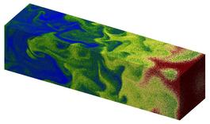
Second image is for a 165 MB QuickTime movie.
This paper has further details about the simulations:
Direct simulation Monte Carlo investigation of the Rayleigh-Taylor instability, M. A. Gallis, T. P. Koehler, J. R. Torczynski, S. J. Plimpton, Phys Rev Fluids, 1, 043403 (2016). (abstract)
Richtmyer-Meshkov mixing
This is work by Michael Gallis (magalli at sandia.gov) at Sandia.
This calculation was done to model Richtmyer/Meshkov mixing which occurs when a light gas is on top of a heavier gas and a shock induces mixing and turbulent effects.
This is a large 2d calculation of He (green) on top of Ar (red). 4.5B particles were run with 400M grid cells for 240K timesteps. The simulation was run on 32K nodes (16 cores per node, 512K MPI tasks) of the Sequoia BG/Q machine at Lawrence Livermore National Labs (LLNL).
Snapshot images of the simulation were created using SPARTA's dump image command, rather than saving particle data to disk. The first 2 images are the initial and final state of the simulation. The thrid image is a movie of the simulation. The fourth image is a comparison of the DSMC results to experiment and a continuum Navier-Stokes simulation.


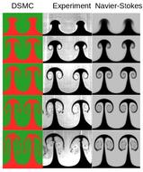
This paper has further details about the simulations:
Direct simulation Monte Carlo investigation of the Richtmyer-Meshkov instability, M. A. Gallis, T. P. Koehler, J. R. Torczynski, S. J. Plimpton, Physics of Fluids, 27, 084105 (2015). (abstract) (http://dx.doi.org/10.1063/1.4928338)
Flow around Mir space station
This is work by Michael Gallis (magalli at sandia.gov) at Sandia, using a surface mesh for the Mir space station provided by Jay LeBeau (NASA).
This calculation was done to model flow around Mir at an altitude of 300K feet. 1.6B particles were used (at steady state) with a computational grid of 10M cells. The Mir surface mesh has 53K triangles. The simulation ran for 0.5M timesteps on 128 nodes (2048 cores) of a large Intel Xeon cluster at Sandia. The final time-averaged steady-state grid and surface element data was written to a file and visualized by TecPlot. The grid cell coloring is for gas temperature; the surface element coloring is for heatflux onto the surface.
The first image is a single snapshot of a cut plane through the data set. The second image is a "movie" of scanning the cut plane through the data set. The third and fourth images are of similar data sets rendered by the ParaView visualization toolkit.

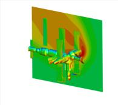

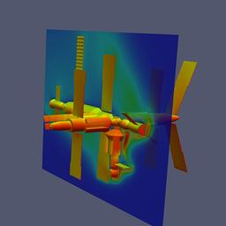

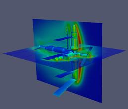
Grid adaptivity for reentry flows
These are snapshots of the adapted grid used to model flow around spacecraft.
The first image is of the Apollo capsule, with flow coming from the lower left. The grid is adapted through 5 levels. The second image is of the Mir space station with a few levels of adaptation around the leading edge of the surfaces directly impacted by the flow.

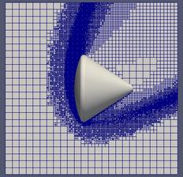

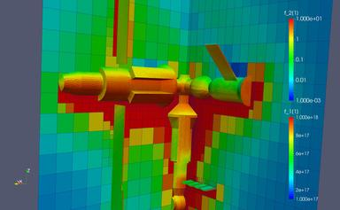
ParaView viz of reentry flows
These are snapshots from simulations done by Michael Gallis (magalli at sandia.gov) to illlustrate use of the open-source ParaView visualization package with SPARTA output. Each is a simple demonstration of flow around a spacecraft in the upper atomosphere, e.g. as it undergoes re-entry.
The workflow for running the simulations was as follows.
a) Convert an STL file representing the object to a SPARTA surface data file, readable by the read_surf command. This conversion was done with the stl2surf tool. The STL and sdata surface files are in the data directory of the distribution.
b) Run a SPARTA simulation which produces grid and surface element output via the dump grid and dump surf commands.
c) Convert the output to ParaView format via the paraview tools Python scripts.
d) Run ParaView to produce images like these or animations.
Thsee are images of the Orion, Gemini, and Apollo capsules, and the space shuttle.

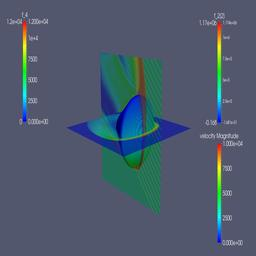

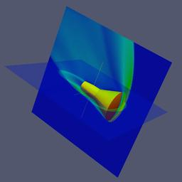

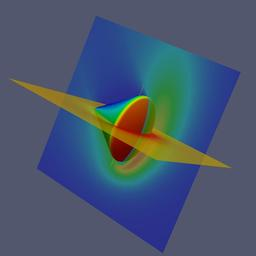

Ambipolar
Flow of ambipolar plasma around a circle.
Input script for this problem from the example/ambi directory. The ambipolar ions, induced by the flow colliding with with the surface, are shown larger in the movie.

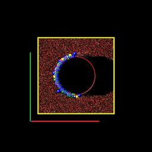
Axisymmetry
Axisymmetric flow around a circle (sphere).
Input script for this problem from the example/axi directory.

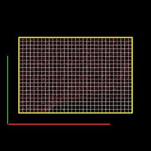
Chemistry
Collisional flow with chemistry in a box.
Input script for this problem from the example/chem directory.

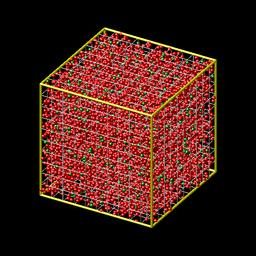
Circle
Flow around a circle.
Input script for this problem from the example/circle directory.

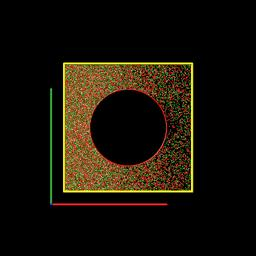
Collisions
Collisional flow in a box.
Input script for this problem from the example/collide directory.

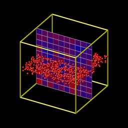
Surface and face emission
Surface emission and box face from and around a circle and from a second circle used as a boundary.
Input scripts for 7 cases, from the examples/emit directory.

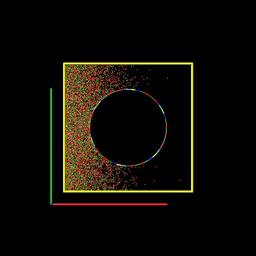

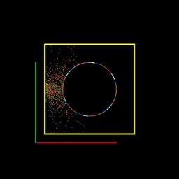

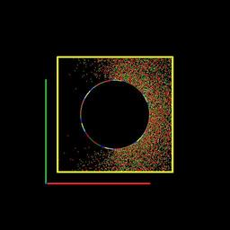

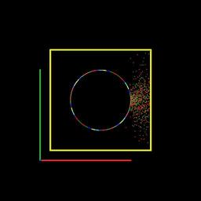

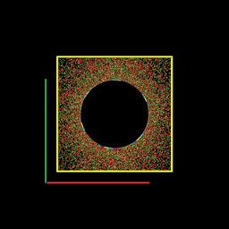

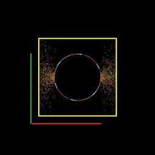

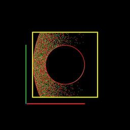
Flow profile defined by file
Particle influx through box face defined by mesh values in a file via the fix emit/face/file command.
Input script and flow profile definition for this problem from the example/flowfile directory.

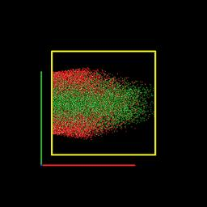
Free molecular flow
Free molecular flow in a box.
Input script for this problem from the example/free directory.

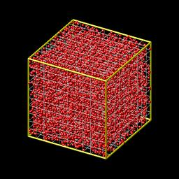
Sphere
Flow around a sphere.
Input script for this problem from the example/sphere directory.

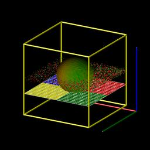
Spiky circle
Flow around a spiky circly, illustrating cut and split cells.
Input script for this problem from the example/spiky directory.

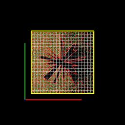
Step
Flow around a staircase step.
Input script for this problem from the example/step directory.

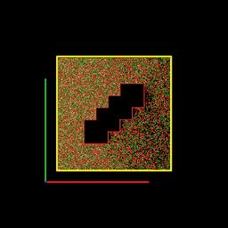